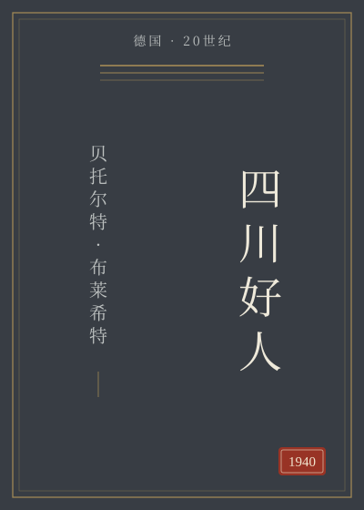
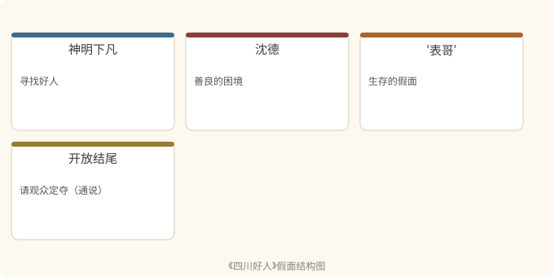

四川好人
一、基本信息
| 作者 | 布莱希特 |
|---|---|
| 成书/出版 | 1940年（作者页 B138 口径：四川好人（1940）） Bertolt Brecht — Encyclopaedia Britannica（百科全书） |
| 国别/地区 | 德国 |
| 时代 | 现当代 · 20世纪 |
| 体裁 | 寓意剧 |
| 语言 | 德语 |

《四川好人》假面结构图（主题·结构图）
二、创作背景
作者页（B138）：布莱希特 major_works 载'母亲（1932）、伽利略传（1939）、四川好人（1940）、高加索灰阑记（1945）'（B138 作者页定位，详见 sanfenqian 条核对）。
设定（通说待核）：三位神明寻找'好人'——沈德的烟店与'表哥'的恶面。
三、内容脉络
沈德行善却难以生存——戴上'表哥'（假定的男性表亲）面具行恶以自保（通说待核）。
开放式结尾：请观众'自己找出好的结局'（通说待核）。
四、主要人物表
| 人物 | 身份 | 说明 |
|---|---|---|
| 沈德/表哥 | 水烟贩 | 一人两面（通说待核） |
| 三位神明 | 下凡者 | （通说待核） |
五、主题与艺术特点
- 善与生存的两难（通说）。
- '陌生化效果'（间离）的舞台实践（通说待核——Verfremdung）。
- 东方题材的寓意化（通说）。
六、影响与评论
- 作者页：布莱希特寓意剧（B138 作者页口径）。
Bertolt Brecht — Encyclopaedia Britannica（百科全书） - 与《三分钱歌剧》《高加索灰阑记》并列（B138 作者页谱系）。
Bertolt Brecht — Encyclopaedia Britannica（百科全书）
七、阅读建议
难点
- '间离'理论的舞台语汇。
- 假面戏中戏。
- 《四川好人》（人民文学出版社《布莱希特戏剧选》，通说待核）。
- 德文原版（Suhrkamp）。
对照《三分钱歌剧》《高加索灰阑记》。
八、待核实
- 1940年流亡芬兰完稿说核对。
- 沈德/Shui Ta人名核对。
- '间离'（Verfremdungseffekt）术语核对。
本页主要来源
布莱希特的其他收录作品：三分钱歌剧